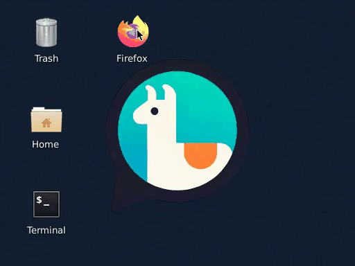
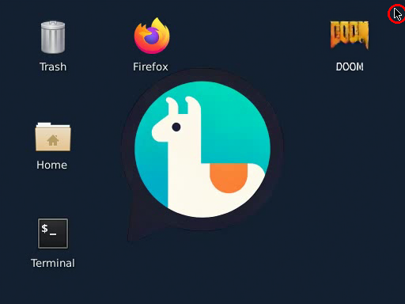
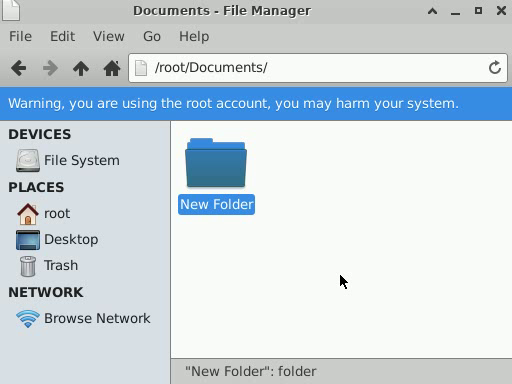

Beyond
ChatGPTWhat else can
AI become?

Yuntian Deng & Bing Yan
Vision 2026 · October 14 · Brantford
What have you
used AI for?
This desktop is generated by AI
NeuralOS · recorded interactionPredict the next screen
Illustrated training example
A recording gives us the answer
Illustrated training example
The model makes a prediction
Illustrated training example
Measure the prediction’s error
Illustrated training example
Training adjusts the model’s numbers
error
Illustrative weights and update
Repeat across many examples
Across many recorded interactions
Simplified learning loop
Now use the trained model
modelweights stay fixed
Next action, next frame
Simplified prediction loop
NeuralOS responds to a click

Recorded interactionThe model confused hovering with clicking


Historical model error · NeuralOS
The missing example: hover without clicking
The screen cannot tell the whole story
Created a folder earlier

Never created a folder
Illustrated histories · identical desktop image
Will the folder still be there?

Memory-test setup
Memory is still a challenge
Folder recalled after 256 frames
Created-folder tests · NeuralOS study
Can AI guess your word?
“can see in the sky,
around earth, not sun”
Your clue becomes a guess


“around earth, not sun” → moon
You can direct the character in English
Words become an action sequence
“act excited, wave, dance, then sit proudly”
Ordinary code moves the character
waveDoes it follow
a new instruction?
“Wave twice, then sit.”
What happened inside this reaction?
molecule
A simplified electron-transfer example
A measurement gives us a clue

Experimental example bundled with SPARK
AI turns papers into searchable claims
Paper
Searchable
claim

Try it yourself
AskChem · papers become claims with traceable evidence
A scientific claim needs a source
“Cyclic voltammetry can be used as a rapid way to assess the ability of a molecule to undergo electron transfer.”
Simulations create training examples
Reaction
+ rates
Known inputs
Physics
simulator
Illustrative training pair · the answer is known inside the simulator
AI works backward from the curve
Trained
model
Plausible explanations
Electron transfer
With a proton step
Teaching example: E vs PCET · no fitted result shown
Can it reproduce the measured curve?
Candidate
explanation
Physics
simulator
Illustrative comparison · neither curve is experimental data
Which experiment could separate them?
Proposed test
An AI explanation
still needs
a real test.

Try it yourself
AI research also studies people
Real conversations in an earlier WildChat release
Historical release reported in the May 2025 talk
What would
you build?
How would
you test it?
Your first experiment can be small
One behavior.
A few test cases.
What are you
curious about?
Yuntian Deng & Bing Yan